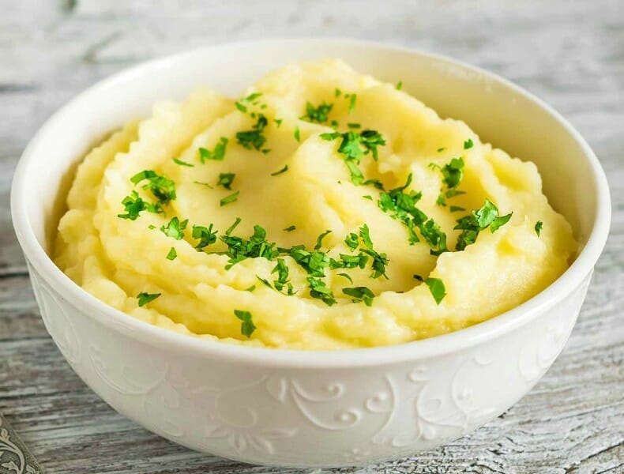

Mashed Potatoes

Description
This recipe gives you creamy, savory mashed potatoes, topped with a green garnish.
Ingredients
- 10 Large Idaho Potatoes
- 1/2 cup of melted butter
- 1 cup whole milk
- 1 cup heavy cream
- 5 scallion stalks, thinly chopped
- 1 teaspoon of salt
Steps
- Bring 12 ounces of water in a large saucepan to boil
- While waiting for the water to boil, rinse the potatoes,
then chop each potato into 4 pieces.
- Put the potatoes in the water, cover the pot, and let them boil for about 25-35 minutes,
or until the potatoes are soft enough to mash.
- Take one cup of the potato water and put it to the side. Then drain the rest of the water.
- Peel the skin off of the potato pieces.
- Add the rest of the ingredients (besides the scallions) to the pot.
- Mix the pot either with a hand masher or a mixer. If the potatoes seem to dry, add the
saved potato water bit by bit until desired consistency is reached.
- Plate the potatoes, and sprinkle the scallions on top.
- Add salt to taste and enjoy! :)